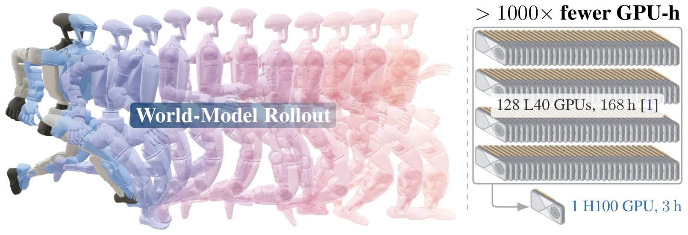
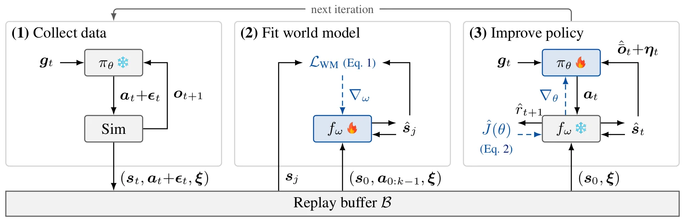
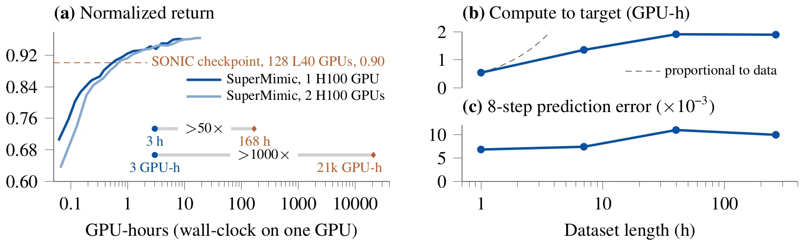
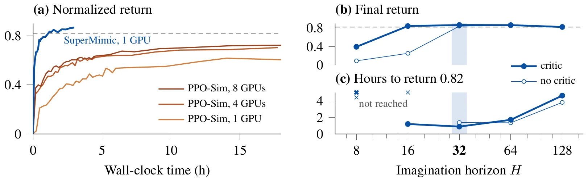
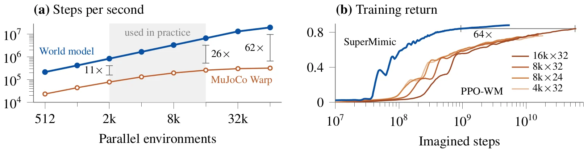
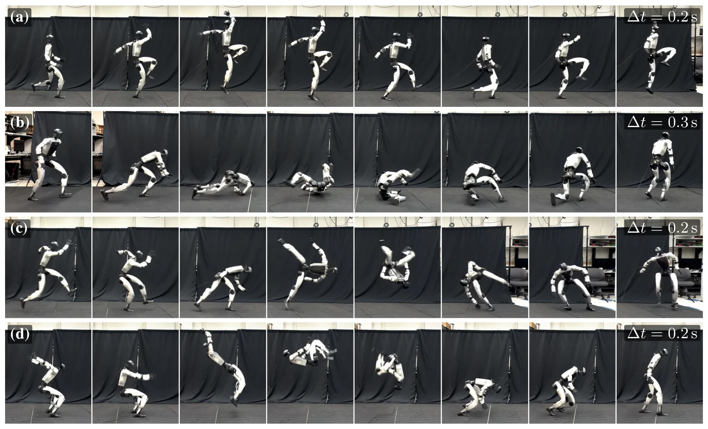
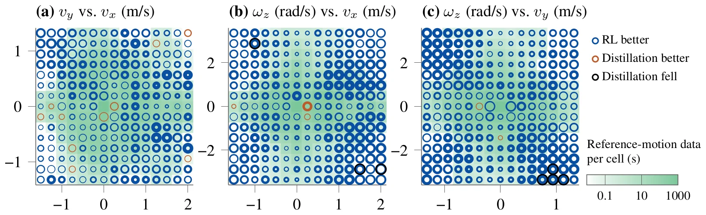
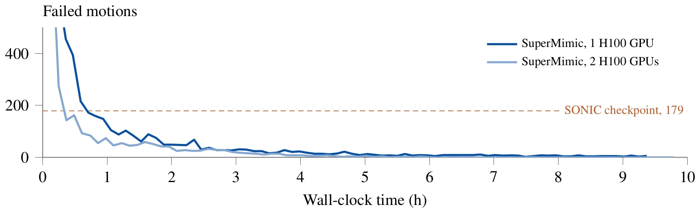

arXiv 2610.28480 · cs.RO · 2026 年 10 月 20 日 · CoRL 2026 · 中文精读
SuperMimic: Scaling Humanoid Whole-Body Control with One Differentiable World Model
作者 Qiayuan Liao、Yiyang Shao、Junfeng Long、Kevin Zakka、Roberto Horowitz、Pieter Abbeel、Koushil Sreenath，均来自 UC Berkeley。Yiyang Shao 和 Junfeng Long 贡献相同，Pieter Abbeel 和 Koushil Sreenath 共同指导。
关于这份精读。arXiv 上这篇用的是默认的非独占分发许可，没有授权翻译或转载，所以这里不做逐字翻译，用自己的话按原文顺序覆盖正文六节和附录 A 到 G。
公式按原文编号给出，表格数字照录原文。插图是从原文 PDF 裁切的原图，没有改动，版权归作者所有，放在这里只为阅读对照。图下的文字说明每张图画了什么，“PDF 里看”打开原文对应页（这篇 arXiv 没有网页版）。标着“重画”的折线图不是原图，是我从原文矢量图读出数据点后画的，可以悬停看数值。标成“读者注”的框是整理时核算或对照发现的问题，不属于论文内容，页尾有汇总。
作者没有公开训练代码。项目主页上的网页 demo 自带专有许可，禁止脚本访问和推导模型结构，所以这里没有用 demo 里的任何东西。论文没写的地方就写“没写”。
让人形机器人动作多样，目前最主流的办法是跟踪大量人体动作。问题是动作一多，训练就贵：要么分别训练专家再蒸馏（有损失），要么靠集群硬堆单一策略。这些流程都用无模型强化学习。
SuperMimic 的想法是，所有动作都是同一个身体做的，动力学是共享的，那就用一个可微世界模型把它学下来。世界模型从普通刚体仿真器记录的转移中拟合，和策略放在一个循环里一起训练；策略的梯度通过短的想象轨迹反传得到（BPTT），是解析的，不是采样估计的。
读完我认为最值得记住的三点：算力差距主要靠“解析梯度 + 快速想象 + 一个模型覆盖全部动作”三者一起得到；32 步的短窗口之所以够用，靠的是评论家；最干净的算力对比其实是受控实验里的“至少 120 倍”，7000 多倍那个数还混着其他差异（读者注 4）。

背景。靠物理仿真的动作模仿，是用强化学习让策略跟踪参考动作，动作来自大规模动捕数据。动作库越丰富，控制器越能干。现有系统有两条路：把针对单个片段的专家蒸馏成一个控制器，或者直接在整个动作库上训练一个通才。两条路都随动作覆盖变贵。SONIC 是当前最好的跟踪器之一，要 128 张 GPU 跑约 168 小时，约 21,000 GPU 小时。
症结。动作虽然不同，身体的混合刚体动力学是同一套。无模型方法不显式利用这一点，只能反复从带噪声的仿真轨迹里估计动作的后果。所以想多覆盖动作，就只能多加算力。
做法。学一个可微世界模型，用仿真器记录的转移来拟合，再通过短想象轨迹做 BPTT。一个动力学模型就把学习成本“摊销”到整个动作库上。因为梯度来自学到的模型，不是对仿真器求导，所以仿真器的接触可以不光滑，代码也可以不可微。
四项贡献。
大规模动作跟踪。DeepMimic 用无模型 RL 做出了生动的角色技能，PHC 把它推到大动作集并能恢复，SONIC 证明数据、策略容量和算力一起放大就能得到可上真机的通才。瓶颈就是算力，这正是本文要解决的。
学到的可微动力学。SuperTrack 通过学到的可微代理优化动作控制策略；ControlVAE 联合学动力学、潜在技能和控制器；MoConVQ 用离散表示扩到几十小时数据；SuperDyno 扩到几万个片段。这些主要用于仿真角色。本文把这条线推到单 GPU 的大规模人形跟踪和真机部署：世界模型能看到仿真上下文，部署的策略只有带噪声的本体感觉和目标。
基于模型的策略优化与部署。Dreamer 系列学潜变量动力学并在想象中做演员-评论家；TD-MPC 把短视野规划和终端价值结合；DayDreamer 直接在真机上学世界模型。SHAC 在可微仿真上做短视野演员-评论家，启发了本文带评论家的目标函数。RWM 和 RWM-U 证明学到的神经仿真器里训练的策略能上真机，但它们在想象轨迹上用 PPO，而且世界模型是用其他策略的数据预先训好的。本文对回报直接求导，世界模型在训练中用自己策略收集的数据拟合。
可复用的动作表示与下游控制。下表是原文表 1 的内容，比较各方法在三个阶段怎样训练。
表 1 · 各方法三个阶段的训练方式（照录原文；SuperMimic 和 SONIC 的三阶段是联合训练的）
| 方法 | 模仿 | 潜变量 | 下游 | 任务信号 | 真机 |
|---|---|---|---|---|---|
| NPMP | SVG(0) | BC | SVG(0) | RL | ✗ |
| ControlVAE | MBRL（联合） | MBRL | RL | ✗ | |
| PhysicsVAE | PPO | BC（带一步一致性项） | PPO | RL | ✗ |
| PULSE | PPO | DAgger | PPO | RL | ✗ |
| MaskedMimic | A2C | DAgger（联合） | 蒸馏 | ✗ | |
| BeyondMimic | PPO | DAgger | 分类器引导扩散 | 蒸馏 | ✓ |
| SONIC | PPO（联合） | 蒸馏（跟踪奖励和潜变量对齐） | ✓ | ||
| LATENT | PPO | DAgger | PPO | RL | ✓ |
| SuperMimic | MBRL（联合） | 蒸馏或 RL | ✓ | ||
目标是一个带目标条件的全身控制器，覆盖多技能动作库，并能接多种目标接口。训练是一个循环里的三步交替：
三者一直一起更新，不分阶段。旧策略收集的转移对拟合模型依然有效，因为动力学不取决于收集它的策略。
符号。问题是目标条件的部分可观测马尔可夫决策过程。状态 \(s_t\) 决定本体观测 \(o_t\) 和终止标志 \(d_t\)；动作 \(a_t\) 产生奖励 \(r_{t+1}\) 和下一状态。策略是确定性的，\(a_t=\pi_\theta(o_t,g_t)\)，动作是归一化的关节设定点，跟踪任务里目标 \(g_t\) 来自参考动作。
动作噪声。收集时仿真器执行 \(a_t+\epsilon_t\)，缓存存的也是加噪后的动作。这个噪声只是为了拓宽模型见到的动作范围，而且是可选的。
软存活权重。回报用 \(c_0=1,\ c_{t+1}=c_t(1-d_{t+1})\) 加权，\(J(\theta)=\mathbb E[\sum_{t\ge0}\gamma^t c_t r_{t+1}]\)。仿真器记录硬终止，世界模型预测终止概率 \(\hat d_t\in[0,1]\)，这样想象里的存活权重才可导。帽子表示世界模型对应的量。
观测分解。\(o_t=\bar o_t+\eta_t\)，\(\bar o_t\) 是干净观测，噪声 \(\eta_t\sim\rho_\eta\) 的分布已知，在世界模型外采样。

自己画的 · 11 幕 3D 框架动画
核心框架拆成 11 幕：总循环、4096 个环境和回放缓存、世界模型内部、8 步自回归拟合、32 步想象和反传、BPTT 对 PPO、评论家和 H（可切换）、多接口策略网络、摊销、算力对账、部署。可以暂停、拖进度、旋转画面。
仿真器的多刚体动力学是已知的，但它不一定给梯度，所以学一个可微代理，让它提供 BPTT 需要的预测和雅可比。这个解析梯度，严格说是“仿真中期望回报的一个代理”的梯度。
为什么可以是确定性的。仿真器的随机性来源都已知：物理参数放进逐回合的仿真上下文 \(\xi\)（摩擦、标定偏移、躯干质心），动作噪声已记录在动作里，传感器噪声在模型外。所以模型不用学分布。它包含动力学和三个头，每个头可以学习，也可以解析计算：
拟合。取缓存里 \(k=8\) 步的窗口，从记录的状态 \(\hat s_0=s_0\) 出发，用记录的动作自回归地往前滚，最小化：
解析计算的头没有对应的损失项。
状态 \(s\) 里有什么、多少维，论文全文没说，只有观测表 A.1。四个头哪些是学的、哪些是解析的也没说。每帧参考动作含哪些量、动作缩放 \(\alpha\) 的值、状态损失各维的权重同样没给。没有这些就不能按论文直接复现。第三方复现要自己决定：SuperMimic-Reproduced 选了奖励和观测头解析算、终止头学习，并把这类缺口整理成了清单，那是复现者的决定，不是作者的。顺带，论文同一个字母 \(g\) 既表示目标 \(g_t\) 又表示观测头 \(g_\omega\)，读公式时要留意。
每次策略更新时，固定 \(\omega\)，在 \(H=32\) 步的想象轨迹上优化 \(\pi_\theta\) 和 \(V_\psi\)。超出窗口的回报由评论家估计，模型只需要在这 32 步内准确。
每条想象轨迹从缓存里的状态 \(s_0\sim\rho_0\) 和它的 \(\xi\) 出发。第 \(t\) 步模型给出干净观测，重新加上传感器噪声后交给策略：\(a_t=\pi_\theta(\hat{\bar o}_t+\eta_t,g_t)\)。目标函数是：
和 PPO 的区别。世界模型可微，BPTT 经 \(\hat s_t\) 和 \(a_t\) 的雅可比算出一阶梯度 \(\nabla_\theta\hat J\)。PPO 把动力学当黑箱，用优势加权随机策略的得分函数，是似然比估计。作者的说法是，BPTT 直接对每个动作求回报的导数，短视野内方差低得多。动画第 6 幕用玩具曲面演示了这个差别。
评论家。只在想象转移上，用 GAE 目标反向递推拟合：
其中 \(V_t=V_\psi(\hat s_t,g_t,\xi)\)，递推从 \(\hat R_H=V_H\) 开始。目标每条轨迹算一次，拟合 \(\psi\) 时固定。
和 SHAC 的差别。结构上是 SHAC 式的短视野演员-评论家，但 SHAC 反传的是可微仿真器。本文把硬终止换成存活权重 \(\hat c_t\)，评论家也没有 EMA 目标网络。之前用解析梯度的跟踪控制器常常不要评论家，只优化 H 步奖励和；名义跟踪回报也能差不多，但更短视，受扰动后的恢复就成了问题（§4.3）。
按表 A.5，\(\gamma=0.99\)，控制频率 50 Hz，有效视野约 100 步，也就是 2 秒。想象窗口 32 步只有 0.64 秒，拟合窗口 8 步只有 0.16 秒。\(\gamma^{32}=0.725\)，所以奖励恒定时，折扣回报约 72.5% 在窗口之外，全靠评论家估计。这是“评论家只是补一补”和实际比重之间的差距，也解释了为什么去掉评论家后 H 短了就训不动。
模型只在 8 步窗口上训练，却要想象 32 步。论文说实践中无限长地滚也稳，原因是 8 步自回归让模型学会纠正自己的误差。但论文里唯一的误差数字是图 3(c) 的 8 步误差，没有 32 步或更长的曲线。这个说法目前只是文字。项目主页有模型和仿真器并排的视频，可以看定性效果。
仿真器是 MuJoCo Warp。成本都在 Lambda 按需实例的 NVIDIA H100（80 GB SXM5）上测得。作者说跑过几个随机种子，训练非常稳定，他们归因于跟踪任务每步都有稠密奖励，所以图里不报种子差异。
归一化回报（下文简称回报）是整段回合每步奖励的不打折和，除以这个和能取到的最大值。提前终止的策略得分就低。
对比对象。SONIC 是已发表的 PPO 流程，在 128 张 GPU 的集群上训练。两者都基于 BeyondMimic 的跟踪设定，所以是能找到的最接近的对比。
结果。1 张 GPU 3 小时内超过 SONIC 公布检查点的回报。在 129,514 个动作的共同基准上，失败数 25（3 小时，1 卡）和 0（9.8 小时，2 卡），SONIC 是 179。作者说 3 小时是保守的：从那以后每个检查点领先 SONIC 的幅度，至少是 SONIC 到 SuperMimic 最好结果差距的一半，回报和失败数都如此。

重画 · 图 3(a) 的数据 · 矢量图读数 · 悬停看数值
算力对账。比较的是 SONIC 报告的 128 张 L40 跑 7 天，和 1 张 H100 跑 3 小时。作者列出了两边的差异：SuperMimic 用 264.56 小时 BONES-SEED（SONIC 数据的公开子集），SONIC 用 611 小时，差 2.3 倍；GPU 型号不同，H100 峰值 fp32 是 L40 的 0.74 倍，张量核心是 5.5 倍，两边实际用到多少峰值不知道。3 小时包括整个训练循环，不含事后评测。作者的结论是 2.3 倍和最多 5.5 倍解释不了 1000 倍。
算术没问题：128 × 168 = 21,504，除以 3 是 7168（论文写约 7200），墙钟 168 / 3 = 56，611 / 264.56 = 2.31。但这个比值比的是“SONIC 训完的总开销”和“SuperMimic 超过它最终回报的时刻”，SONIC 何时第一次到 0.90 是不知道的。受控实验更干净：PPO-Sim 8 卡跑 18 小时（144 GPU 小时）到 0.72，还没到目标；SuperMimic 1.19 GPU 小时到 0.834。可得出的是 GPU 小时至少 121 倍，墙钟至少 15 倍（“至少”是因为 PPO 没到）。这个数更能代表方法本身的差距，它比 7168 小很多，也还是很大。
从图 3(a) 的点读：1 卡版在 0.62 GPU 小时就到 0.907，已超过 0.90。从图 A.1 读：失败数在 0.71 小时降到 179 以下。按作者自己“领先一半差距”的标准，我算下来回报门槛约 0.93、失败数门槛约 90，大约 2 小时就都满足了。说 3 小时确实留了余量，不过图 3(a) 只画了部分检查点，这个 2 小时是粗略的。
受控对比（图 4a）。LAFAN1 上的基线 PPO-Sim 和 SuperMimic 共用动作、观测、奖励、终止、域随机化、演员和评论家的网络大小和评测方法。它用 BeyondMimic 的 PPO 超参数，每卡 8192 个环境，是 SuperMimic 的 2 倍。结果：SuperMimic 1 卡 1.2 小时到 0.82；PPO-Sim 在 18 小时预算内都没到，最终 1 卡 0.60、4 卡 0.70、8 卡 0.72，4 卡加到 8 卡几乎没帮助。

重画 · 图 4(a) 的数据 · 矢量图读数 · 悬停看数值
一个模型摊销整个动作库。数据从 1 小时到 264 小时，8 步误差保持在 0.007 到 0.011。所有动作都是同一个身体做的，新片段提供的是更多关于同一动力学的证据，不要求更多容量。这和图 3(b) 算力增长缓慢是一致的。
图 3(b)(c) 读数（矢量图，四舍五入）
| 数据长度 | 1 h | 7 h | 40 h | 264 h |
|---|---|---|---|---|
| 到目标回报 GPU 小时 | 0.54 | 1.35 | 1.91 | 1.89 |
| 若和数据成正比 | 0.54 | 3.8 | 21.5 | 142 |
| 8 步误差（×10⁻³） | 6.8 | 7.4 | 11.0 | 9.9 |
264 倍的数据只要 3.5 倍算力，趋势很明显。但有三点要注意。第一，图 3(b) 的“目标回报”是多少，全文没说；0.82 是图 4 在 LAFAN1 上的目标，不是这里的。第二，误差从 6.8 到 9.9 涨了 46%，相对于 264 倍数据算稳定，严格说不是不变，而且 40 小时的 11.0 比 264 小时还高。第三，这个误差只算状态，用一个“预定义的名义误差”归一化，名义误差的定义没给，所以 0.01 到底对应多少米、多少弧度看不出来。子集怎样抽取也没说，整张图只有 4 个数据长度。
想象加速滚动。策略优化时，滚动速度决定更新成本。实际使用的批量上，世界模型比 MuJoCo Warp 快 10 倍以上，64k 环境时到 62 倍。一步是 1 个 50 Hz 控制步，仿真器算 4 个 5 ms 子步。

重画 · 图 5(a) 的数据 · 矢量图读数 · 悬停看数值
读出来各批量的比值：512 为 9.3、1k 为 9.6、2k 为 10.8、4k 为 12.8、8k 为 17.1、16k 为 25.8、32k 为 44.1、64k 为 62.4，和图上标注一致。但表 A.5 写的是每 GPU 4096 个环境、每次 4096 条想象，所以论文这个配置对应的是约 12.8 倍，62 倍不是它实际跑的工况。另外这张图只比前向速度，没算反向传播的成本，而世界模型跑的是 TF32 精度，这也是快的原因之一。
一阶梯度只要更少的想象步。这是一个机制消融：图 5(b) 在 LAFAN1 的走、跑、冲刺动作上，比较 SuperMimic 和“在世界模型轨迹上跑 PPO”（PPO-WM），两边都用世界模型，排除了仿真速度。SuperMimic 用约 1/64 的想象步数到达 PPO-WM 的最好回报，所以增益不只是滚动快。
图 5(b) 上那条横线的两端读出来是 108.98 和 1010.77，比值约 62，回报约 0.84，和“约 64 倍”相符。PPO-WM 只有 16k×32 这组到了 0.84，其他三组最高 0.76 到 0.77。不过这是走跑冲刺的小子集和训练回报，而且比的是步数，不是时间。把 12.8 倍和 64 倍相乘是 820，离 7168 还差很多，但这样乘本来就不成立：两个数来自不同任务，BPTT 每步还多一次反传。论文列了三个来源，并没有把 7168 倍拆开记账。
不带评论家时，H ≤ 16 训练失败。带评论家时，H = 16 和不带评论家的 H = 32 一样好，H = 32 到 0.82 最快。H 从 64 加到 128，时间几乎变成 3 倍，最终回报还下降；128 也是 H100 显存能放下的最长 H。
图 4(b)(c) 读数（矢量图）。“—”表示没到 0.82
| H | 8 | 16 | 32 | 64 | 128 |
|---|---|---|---|---|---|
| 最终回报，不带评论家 | 0.09 | 0.25 | 0.84 | 0.86 | 0.83 |
| 最终回报，带评论家 | 0.39 | 0.84 | 0.87 | 0.86 | 0.82 |
| 到 0.82 的小时，不带 | — | — | 1.38 | 1.35 | 3.81 |
| 到 0.82 的小时，带 | — | 1.20 | 0.89 | 1.71 | 4.63 |
回报差不多时，评论家还改变行为。在模拟中保持 T 字站姿，受 0.5 到 4 m/s 的速度推力：带评论家的策略 0.5 到 2.4 秒内站稳；不带的永远站不稳，0.5 m/s 就踉跄，4 m/s 会摔倒。
读数和正文一致：64 到 128 的时间比，带评论家 2.7 倍，不带 2.8 倍。图 4(c) 里 H = 32 是 0.89 小时，图 4(a) 里 SuperMimic 第一次过 0.82 是 1.19 小时，这不矛盾：前者是训练回报，后者是评测回报，图注说明了。还有一个小观察：只看到 0.82 的时间和最终回报，H = 32 带不带评论家差别不大（0.89 对 1.38 小时，0.87 对 0.84），评论家的主要价值在 H 更短时和受扰时。
一个通用跟踪器部署到实体 Unitree G1，不按动作调参。四种动作：跳跃跨步（移动）、侧滚（躯干和四肢都接触地面）、90° 空翻和原地 360° 空翻（杂技）。

下游目标编码器和跟踪接口一起训练，共享解码器和世界模型。这部分是初步研究：一个速度编码器按速度跟踪奖励穿过世界模型训练；基线也是速度编码器，但用跟踪奖励，命令从参考动作读（蒸馏）。在 672 次阶跃响应上，RL 编码器稳态误差更低的有 650 次，蒸馏更低的 15 次。只有蒸馏会摔，都是动作库几乎没有数据的快速转弯。

作者的结论是，算力不再是人形全身控制扩展的瓶颈。一个可微世界模型抓住所有动作共享的动力学，穿过它做 BPTT 就能把整个数据集摊销进一个策略。单 GPU 超过集群，能上真机，成本随数据增长缓慢，同一个模型也能直接按接口自己的奖励训练下游接口。作者认为，现在每次实验只要一张 GPU，研究动作跟踪的扩展规律终于负担得起了。
表 A.1 · 本体观测 \(o_t\)。策略接收最近 10 帧
| 项 | 维度 | 噪声 \(\eta_t\) | 单位 |
|---|---|---|---|
| 关节位置 \(q-q^0\) | 29 | U[−0.01, 0.01] | rad |
| 关节速度 \(\dot q\) | 29 | U[−0.5, 0.5] | rad/s |
| 基座角速度（IMU） | 3 | U[−0.2, 0.2] | rad/s |
| 投影重力 | 3 | U[−0.05, 0.05] | – |
| 上一动作 \(a_{t-1}\) | 29 | – | – |
目标。跟踪接口的目标来自参考动作。相比 BeyondMimic 的单帧目标，这里给编码器未来 \(K=10\) 帧。
动作。关节设定点 \(q^{sp}=\alpha a_t+q^0\)。沿用 BeyondMimic，PD 增益很低，设定点实际上相当于力矩的代理，不是期望位置。
奖励。沿用 BeyondMimic，有两处改动。去掉自碰撞惩罚：它防的是随机策略钻空子（参考动作让两个部位靠近时，把它们压在一起能压住动作噪声，提高速度跟踪奖励），确定性策略在想象里没有这个漏洞。关节限位权重从 −10 降到 −2。
表 A.2 · 动作跟踪奖励。\(\mathcal T\) 是被跟踪的刚体集合。每项再乘控制周期 \(\Delta t=0.02\) 秒
| 项 | 公式 | 权重 |
|---|---|---|
| 刚体位置 | \(\exp(-\frac1{|\mathcal T|}\sum_b\lVert p_b^{des}-p_b\rVert^2/0.3^2)\) | 1.0 |
| 刚体朝向 | \(\exp(-\frac1{|\mathcal T|}\sum_b\lVert\log(R_b^{des}R_b^\top)\rVert^2/0.4^2)\) | 1.0 |
| 刚体线速度 | \(\exp(-\frac1{|\mathcal T|}\sum_b\lVert v_b^{des}-v_b\rVert^2/1.0^2)\) | 1.0 |
| 刚体角速度 | \(\exp(-\frac1{|\mathcal T|}\sum_b\lVert\omega_b^{des}-\omega_b\rVert^2/3.14^2)\) | 1.0 |
| 根部位置 | \(\exp(-\lVert p_{root}^{des}-p_{root}\rVert^2/0.3^2)\) | 0.5 |
| 根部朝向 | \(\exp(-\lVert\log(R_{root}^{des}R_{root}^\top)\rVert^2/0.4^2)\) | 0.5 |
| 动作平滑 | \(\lVert a_t-a_{t-1}\rVert^2\) | −0.1 |
| 关节限位 | \(\sum_j\max(0,q_j-q_j^{max})+\max(0,q_j^{min}-q_j)\) | −2 |
终止。根部高度偏差 \(|e_{p,z}|>0.25\) 米，或倾斜误差 \(e_{tilt}>0.8\)。\(e_{tilt}\) 是重力方向在参考和机器人根部（骨盆）坐标系里的 z 分量之差的绝对值。和 BeyondMimic 不同，末端偏差不算终止。
表 A.3 · 组成仿真上下文 \(\xi\) 的域随机化参数
| 参数 | 分布 |
|---|---|
| 摩擦系数 | \(\mu\sim U[0.3,1.2]\) |
| 关节标定偏移（rad） | \(\Delta q_j^0\sim U[-0.01,0.01]\) |
| 躯干质心偏移（m） | \(\Delta x\sim U[-0.025,0.025],\ \Delta y,\Delta z\sim U[-0.05,0.05]\) |
去掉了 BeyondMimic 的根部速度扰动，因为状态突变是确定性模型抓不住的。作者发现只随机化物理参数就足以迁移到真机。
观测表没有基座线速度，也没有相对参考的位姿，策略靠本体感觉和未来参考帧来跟踪。论文没有讨论长时间下的累积漂移。第三方的 SuperMimic-Reproduced 报告：按论文观测在 100 到 300 秒的整段 LAFAN1 片段上，偏航误差约 9 秒就超过 15°，回报只有 0.56 到 0.59（论文 0.82），加上相对锚点的观测后到 0.904；另一个复现 supermimic_vibed 则报告 0.829。两者设置不同，我没有跑过，也没有核实，不能据此判断对错，但这可能是复现时最先遇到的差距。
身体的物理是共享的，所以同一个动力学模型能训练多种目标接口（完整参考、速度命令、末端位姿、SMPL 姿态）。每个接口有自己的目标空间、奖励、终止和评论家 \(V_{\psi_i}\)。同一个策略网络由各接口的编码器和一个共享解码器组成：
优化目标是 \(\max_\theta\mathbb E_{i\sim p(\mathcal I)}[\hat J_i(\theta)]\)。每个 \(\hat J_i\) 都是式 (2)，只换策略、奖励、终止和评论家。动力学模型不按接口重训。
蒸馏还是 RL，取决于用什么奖励。蒸馏用跟踪奖励，命令从参考动作读，让接口学会“从这个命令复现参考动作”。RL 用接口自己的任务奖励，穿过世界模型直接优化。在下游接口的轨迹上，回报梯度穿过共享解码器到达编码器，但解码器的权重有 stop-gradient，它仍由跟踪目标训练。速度编码器另有一项朝向动作潜变量的对齐损失（附录 G）。
表 A.4 · 世界模型、策略和评论家（MLP 按隐藏层宽度写）。潜变量 z 为 32 维，tanh 限幅
| 网络 | 输入 | 输出 | 结构 |
|---|---|---|---|
| 动力学 \(f_\omega\) | \(\hat s_t,a_t,\xi\) | \(\hat s_{t+1}\) | MLP (2048, 2048, 2048) |
| 动作编码器 | 未来 10 帧参考 | z | MLP (2048, 1024, 512, 256) |
| 速度编码器 | 归一化命令 \((v_x,v_y,\omega_z)\)，最近 10 帧 o 的特征 | z | MLP (256, 256) |
| 共享解码器 | z，最近 10 帧 o | \(a_t\) | MLP (2048, 1024, 512, 256) |
| 评论家 \(V_{\psi_i}\) | \(\hat s_t,g_t,\xi\) | 标量 | MLP (256, 128)，每接口一个 |
按表 A.1，一帧观测是 29 + 29 + 3 + 3 + 29 = 93 维，10 帧 930 维，加上 32 维 z，解码器输入 962 维，输出 29 维。只算线性层，解码器约 473 万个参数（我的计算）。激活函数、归一化和初始化论文没写。
算法 A.1 · 训练循环（用自己的话）
D.1 按回报重置。动作时间轴切成 1 秒一个区间，每个区间 \(b\) 记一个折扣回报的滑动估计 \(G_b\)，用策略自己的轨迹更新。重置点混合三种分布：50% 均匀；40% 按 \(\mathrm{softmax}_b(-25G_b/G_{max})\)；10% 按每个区间过去的 softmax 权重，让学会了的难动作还能继续练。
表 A.5 · 超参数
| 超参数 | 值 |
|---|---|
| 世界模型 | |
| 窗口长度 k | 8 |
| 优化器、学习率 | Adam；1 卡 2×10⁻⁴，2 卡 √2 × 2×10⁻⁴ |
| 批量 | 每次更新 10 批，每批 2048 个窗口 |
| 梯度裁剪 | 全局范数 1.0 |
| 想象和策略 | |
| 想象长度 H | 32 |
| 优化器、学习率 | Adam β = (0.9, 0.95)，学习率同上 |
| 批量 | 每次更新 4096 条想象轨迹 |
| 梯度裁剪 | 全局范数 1.0，再逐元素 0.1 |
| 折扣 γ | 0.99 |
| 评论家 | |
| GAE λ | 0.95 |
| 优化器、学习率、裁剪 | Adam，同上，全局范数 1.0 |
| 每次更新 | 5 轮，每轮 4 个打乱的小批 |
| 数据收集 | |
| 环境数 | 每 GPU 4096 |
| 动作噪声 ε | N(0, 0.1²)，每个动作维度 |
| 缓存大小 | 每个环境 1000 步 |
| 调度 | |
| 更新数据比 | 0.4 |
| 每次世界模型更新的策略更新数 | 1 |
| 学习率 | 余弦衰减到 0.03 倍（250,000 次迭代），之后不变 |
| 训练长度 | 320,000 次迭代 |
| 多 GPU | 数据并行，跨 GPU 平均梯度 |
图 A.1 每 4000 次迭代评测一次，点距可以反推时间：1 卡版末点 9.37 小时、2 卡版 9.79 小时，除以 80 个检查点，正好对应 320,000 次迭代，也说明“9.8 小时”就是跑完整个训练长度。于是 1 卡每次迭代约 105 毫秒，3 小时约 10 万次迭代。
问题在“更新数据比 0.4”。算法 A.1 的说明写“每次迭代 ω 和 θ 都更新”。把它和图 5(a) 的速度放在一起看（4096 环境时仿真 1.31×10⁵ 步/秒，世界模型 1.68×10⁶ 步/秒）：仿真一个向量步要 31 毫秒，想象 32 步光前向就要 78 毫秒，加起来已经超过 105 毫秒，还没算反向和世界模型拟合。如果每次迭代都做一次完整更新，这笔账对不上。如果一次迭代是一个仿真向量步、平均做 0.4 次更新，那么 31 + 0.4 × 约 185 毫秒正好是 105 毫秒，说得通。第三方复现 SuperMimic-Reproduced 也按这样理解，但它同样注明论文无法确定。这是我的推算，用的是图上的前向速度，真实吞吐可能更好。
如果这个理解是对的，整个训练大约 1.3×10⁹ 个仿真步（约 7,300 小时仿真时间）、1.7×10¹⁰ 个想象步，缓存每 1000 次迭代（不到 2 分钟）整体刷新一遍。
训练用公开的 G1 重定向版 BONES-SEED。原始 142,220 个片段里，很多涉及机器人用不了的地形或物体（楼梯、箱子、梯子、椅子），或者带重定向瑕疵，平地上站不住。分两轮过滤，留下 129,514 个。
F.1 基准。SONIC 和 SuperMimic 用同一个过滤后的基准，SONIC 评测公布的检查点和 v1.1 检查点。每个动作从第一帧放一次，同样的仿真：脚摩擦 1.0，无域随机化，无观测噪声，确定性物理。各策略用自己的执行器增益和动作缩放，观测按各自训练环境的方式构造。触发 SuperMimic 训练时的终止条件，就算这个动作失败。
表 A.8 · 每组失败数（照录原文）
| 动作组（动作数） | SONIC | SuperMimic 1 卡 × 3 h | 2 卡 × 9.8 h |
|---|---|---|---|
| 侧滚（22） | 22 | 2 | 0 |
| 空翻 360°、180°、90°（44） | 44 | 1 | 0 |
| fire-in-the-hole 转身（20） | 3 | 3 | 0 |
| 腿交叉（10） | 9 | 0 | 0 |
| 躺下、休息、站起（99） | 28 | 8 | 0 |
| 远跳（24） | 15 | 0 | 0 |
| 舞蹈组合（8） | 8 | 0 | 0 |
| 其他所有动作（129,287） | 50 | 11 | 0 |
| 总计（129,514） | 179 | 25 | 0 |
粗体表示这一组全部失败。SONIC 的 v1.1 检查点失败 239 个，包括同样的空翻和舞蹈，以及 22 个侧滚中的 19 个。SuperMimic 3 小时版的失败集中在少数难的小组：前五组 195 个动作占了它 25 个失败里的 14 个。作者明确说，基准动作对两者都是训练动作，所以数字衡量的是对训练动作的覆盖，不是泛化。

重画 · 图 A.1 的数据 · 矢量图读数（纵轴截到 200，第一个点是 1555）· 悬停看数值
图 A.1 的矢量坐标很干净：读出来的值都接近整数，SONIC 虚线读到 178.99。1 卡版在 3 小时附近依次是 28（2.81 h）、27（2.93 h）、31（3.05 h）、30（3.16 h）、24（3.28 h）、24（3.40 h）。没有 25，整条 1 卡曲线上都没有 25，而表 A.8 和摘要写的是 25。论文没说 25 来自哪次评测，可能是单独评了 3 小时那个时刻，也可能是别的取法。差别不大，但这也说明相邻检查点本身会抖 ±几个，“25 对 179”的差距显著，“25”这个精确数字不必当真。
2 卡版在 6.12 小时第一次到 0，然后在 0 和 1 之间跳，8.08 小时之后保持 0，直到训练结束的 9.79 小时。所以“9.8 小时后 0 失败”写得保守，实际上 6 小时就基本到了。1 卡版跑满 320,000 次迭代（9.37 小时）时是 6 个，最低到过 2 个，始终没到 0。回报上两者几乎一样（0.964 对 0.960），多一张卡主要体现在失败数。这些都是一次运行的结果，图里没有多种子的范围。
失败用的是 SuperMimic 的终止条件，含倾斜项，不含末端。SONIC 自己的判据是根部和末端高度偏差超过 0.25 米，没有朝向项，论文也写明了这一点。于是 SONIC 被一个它训练时没针对的判据评判。空翻、侧滚这类大幅旋转的动作，倾斜判据可能特别敏感，而这些正是 SONIC 全军覆没的组。论文没有报告换用 SONIC 自己判据时的失败数，所以这一差异究竟影响多少不知道。归一化回报同样受这个判据影响，因为提前终止就得低分。项目主页“翻转”片段可以看直观差别，但那也是作者挑的片段。
过滤：142,220 − 12,553 = 129,667，− 153 = 129,514。表 A.8 的组大小加起来 129,514；各列加起来 179、25。前五组 22 + 44 + 20 + 10 + 99 = 195，1 卡失败 2 + 1 + 3 + 0 + 8 = 14，都对。倾斜阈值：\(\arccos(0.2)=78.5°\)（附录写约 78°），\(\arccos(0.3)=72.5°\)（附录写约 73°）。项目主页的表没有单列 fire-in-the-hole 转身，把它并进了“其他”，所以那里写 129,307、53、14，和这里的 129,287 + 20、50 + 3、11 + 3 一致。
F.3 实验设置。图 3 用过滤后的 BONES-SEED 训练。数据长度扫描用 1、7、40、264 小时的子集。
训练。每个编码器各自从零开始，和跟踪接口一起训练 100,000 次迭代，动作库是从 LAFAN1 和 BONES-SEED 里筛的走跑片段。4096 个环境和每批想象都有一半走速度接口（这和算法 A.1“每次抽一个接口”不同）。
命令。\(g_t=(v_x,v_y,\omega_z)\)，平面速度在只含偏航的朝向系里，偏航率在世界系。RL 编码器每次重置和每 250 步（5 秒）重抽来源：一半概率每步从参考读（居中 25 帧的均值），一半概率保持一条均匀抽的命令：\(v_x\in[-1.5,2]\) m/s，\(v_y\in[-1.32,1.32]\) m/s，\(\omega_z\in[-3.35,3.35]\) rad/s，并有 10% 概率置零（站立）。
编码器。走参考命令的轨迹上，用权重 0.1 的均方损失把速度潜变量拉向同一步的动作潜变量，后者 stop-gradient。
表 A.6 · 训练 RL 编码器的速度跟踪奖励（每项乘 \(\Delta t=0.02\) 秒）
| 项 | 公式 | 权重 |
|---|---|---|
| 线速度 | \(\exp(-\lVert v_{xy}-v_{xy}^{cmd}\rVert^2/0.5^2)\) | 2.0 |
| 偏航率 | \(\exp(-(\omega_z-\omega_z^{cmd})^2/0.5)\) | 2.0 |
| 动作平滑 | \(\lVert a_t-a_{t-1}\rVert^2\) | −0.3 |
| 关节限位 | 同表 A.2 | −2 |
| 躯干侧倾 | \(\sin^2\phi_{torso}\) | −4 |
| 躯干滚转、俯仰角速度 | \(\omega_{roll}^2+\omega_{pitch}^2\) | −0.05 |
终止只看摔倒：根部高度低于 0.35 米，或 \(1+u_z>0.7\)（约 73° 倾斜）。
G.2 阶跃测试。从站立开始给一条固定命令 5 秒，每条 4 次。相对稳态误差是最后 2 秒平均速度误差的范数除以命令范数。每条命令取没摔的试验的中位数。三个平面各 15 × 15 的网格，去掉站立命令，共 672 条。
结果。RL 编码器更低的 650 条，蒸馏更低的 15 条。中位相对误差 0.16 对 0.49。蒸馏在 7 条命令上每次都摔，都是平移加至少 2.8 rad/s 的转弯。每个策略只有一个训练种子。
15 × 15 × 3 − 3 = 672，650 + 15 + 7 = 672，都对得上：摔倒的 7 条单独算。结论方向很清楚，但每边只有一个种子。而且基线的蒸馏用的是从参考动作读的命令，动作库没有的区域它自然没见过；RL 编码器则有一半时间在整个命令范围里均匀采样。所以这个差距有一部分来自训练时覆盖的命令分布，不全来自“RL 对蒸馏”这个信号本身。论文也说这是初步研究。
PPO-Sim 用的是 BeyondMimic 的超参数和每卡 8192 个环境。论文没说有没有为 40 个片段的多动作任务再调参。4 卡到 8 卡几乎不再提升，可能是因为 PPO 本身到了平台，也可能是超参数不适合，这张图分不清。作为“开箱即用的 PPO”这个对比很公平；作为“PPO 能做到的最好”就不一定了。
写这页时（2026 年 11 月 6 日）作者没有公开训练代码。网上已有几十个社区复现，其中几个的结果和论文接近或有差距（见读者注 10），都不是官方的，我也没有逐个核实。项目主页的网页 demo 可以在浏览器里手动试，它的许可证禁止脚本访问和推导模型，所以本页没有从中取任何东西。
以下各条都是本页加的核算或对照，不属于论文内容。点编号跳到对应位置。
文中提到的数据集、引擎、方法和复现。链接在 2026 年 11 月 6 日核对过可以打开。
| 名称 | 是什么 | 主页 | 论文 |
|---|---|---|---|
| SuperMimic | 本文 | supermimic.github.io | 2610.28480 |
| BONES-SEED | 大规模动作数据集，本文的 264 小时 | huggingface.co/datasets/bones-studio/seed | – |
| LAFAN1 | 动捕数据集，受控对比用 | github.com/ubisoft/ubisoft-laforge-animation-dataset | – |
| MuJoCo Warp | MuJoCo 的 GPU 实现，本文的仿真器 | github.com/google-deepmind/mujoco_warp | – |
| Unitree G1 | 人形机器人，29 自由度版本 | unitree.com/g1 | – |
| SONIC | 集群规模 PPO 跟踪器，对比基线 | – | 2511.07820 |
| BeyondMimic | 跟踪任务的设定和奖励来源 | – | 2508.08241 |
| DeepMimic | 动作模仿的开创工作 | – | 1804.02717 |
| PPO | 无模型 RL 基线 | – | 1707.06347 |
| SHAC | 可微仿真上的短视野演员-评论家 | – | 2204.07137 |
| RWM | 学到的神经仿真器 + PPO | – | 2501.10100 |
| GAE | 评论家目标的来源 | – | 1506.02438 |
| SuperMimic-Reproduced | 第三方复现，未核实 | github.com/CuboiLeo/SuperMimic-Reproduced | – |
| supermimic_vibed | 第三方复现，未核实 | github.com/zita-ch/supermimic_vibed | – |